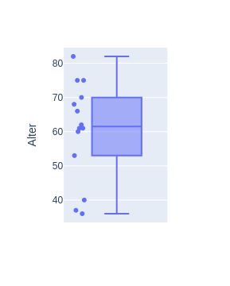
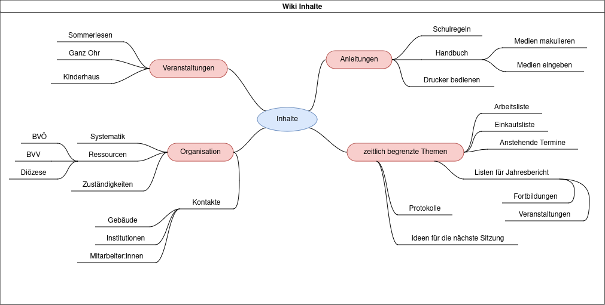

Bücherei Wiki
Wissensaustausch im Wandel
Elisabeth Getzner
Bücherei Nofels
September 2024
Ausgangslage
Unser Team
15 Personen
1-2 Personen pro Dienst (meist die selben)
ausschl. ehrenamtlich (inkl. Leitung)

Altersverteilung
Kommunikation & Austausch
💬 WhatsApp-Gruppe
✉️ E-Mail (Protokolle, interessante Veranstaltungen)
🗒️ Post-Its und Zettelwerk
👥 Teamsitzungen (ca. 1x im Quartal)
🗃️
Anleitungen
gedruckt in Ordner abgelegt
am PC verfügbar (Word Dokumente)
Relativ großes Team (15 Personen)
Arbeit meist getrennt in kleinen Gruppen (2-3 Personen)
Kommunikation & Austausch in Teamsitzungen, E-Mail oder
Whatsapp
Diverse Anleitungen, von denen nicht alle wissen
Probleme
ungleicher Wissensstand
Protokolle schwer zu durchsuchen
schwer, alle Mitglieder zu erreichen
Zettelwerk nur vor Ort zugänglich
Informationen nicht nachvollziehbar
wenig Zeit
kaum geschultes Personal
keine Person die für etwas fix zuständig ist
unklare Aufgabenverteilung
unklar: wer hat was schon gemacht, was muss gemacht werden
ungleicher Wissensstand
Ich hab’s!
Ein Wi(c)ki(e) für die
Bücherei Nofels
Was ist ein Wiki?
Website, deren Inhalt von Besuchern nicht nur gelesen
sondern auch verändert werden kann
Beispiele
Wiki in
Organisationen
Erfahrung & Wissen dokumentieren
Zugriff auf bereits existierenden Lösungen
gemeinschaftliches Arbeiten (Kollaboration)
Author 👤 und Zeitpunkt ⏲ ersichtlich
Unternehmenswiki Confluence :
beliebtes
Leitfragen
👓 Lesen : Wissen zugänglich
machen
✍️ Bearbeiten : Inhalte abändern
und schreiben
🫰 Nutzen : Kosten und
Wartungsaufwand
👓 Lesen:
Wie können wir unser gesammeltes Wissen möglichst zugänglich
machen?
Welche Anforderungen stellen wir an diese Software?
Bearbeiten ✍️
Welche Voraussetzungen müssen gegeben sein, damit Inhalte auch
abgeändert und beschrieben werden können?
Nutzen 🫰 💰 💶 💵
Ist diese Form der Organisation hilfreich für unsere Bücherei?
Stehen der Wartungsaufwand und die Kosten in Relation zum
Nutzen?
Mit dem Team
Anforderungen und Erwartungen klären
Ideen für Inhalte sammeln

Ideen für Wiki-Inhalte
Technische Analyse
existierende Lösungen finden (z.B. Träger)
technische Einschränkungen und Anforderungen beachten
Hosting
Wartung
zusätzliche Kosten
Wiki-Systeme mit Anforderungen vergleichen
Unsere Anforderungen
Einfache Bedienung
benutzerfreundliche Texteingabe (WYSIWYG)
übersichtliche Darstellung
Arbeit von zu Hause aus
Benutzerrollen
geringe Kosten
wenig Wartungsaufwand
Entscheidung für ein Wiki
82 Wikis zur Auswahl bei WikiMatrix
Nach Anforderungen und technische Limitationen
DokuWiki
BookStack
BookStack
BookStack
BookStack
Vorteile
Moderne Oberfläche
WYSIWYG Editor
Einfache Struktur
Nachteile
schwerer aufzusetzen
kaum anpassbar
unübersichtlich
Wiki aufsetzen
Hosting beantragen bzw. installieren
monatl. Kosten: ca. 5 EUR/Monat
Benutzer importieren
Inhalte importieren
Rechte verwalten
Nachbereitung
Schulungen ❗
Suche & Navigation
Bearbeiten
Benutzerrechte pflegen
Benutzer hinzufügen/löschen
Schreibzugriff limitieren
Kosten- & Nutzen analysieren
Resultate
👓: Anleitungen leichter auffindbarer gemacht
gesteigerte Wertschätzung
Offene Arbeiten (z.B. veraltete Dokumente) identifiziert
✍️: Schulungen; einfacher WYSIWYG Handhabung
🫰: Nutzen übersteigt Kosten
Evaluierung ausständig (2025)
Learnings
technischer Hintergrund ist hilfreich, aber nicht zwingend
notwendig
kostengünstige Möglichkeiten evtl. bereits verfügbar
Benutzerfreundlichkeit sehr wichtig
so einfach wie möglich halten
nicht auf perfekte Lösung warten
Fazit
Wichtig ist, sich über die vorhandene und fehlende Dokumentation
Gedanken zu machen und mit dem Team gemeinsam an einem möglichst
aktuellen Wissensstand zu arbeiten.